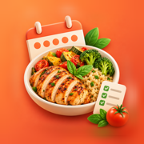
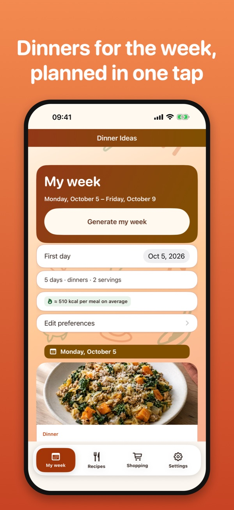
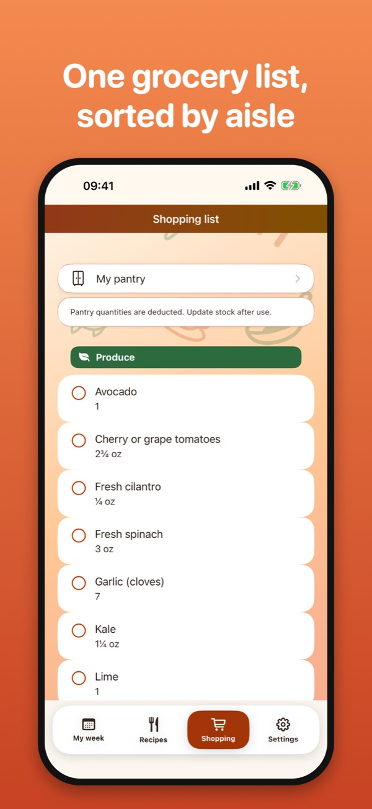
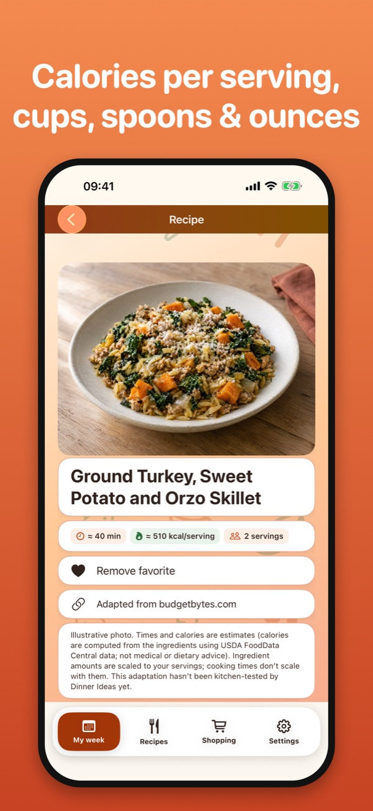

iPhone app · No account · No ads
What’s for dinner this week? One tap plans 5 or 7 easy dinners and builds the grocery list that goes with them, sorted by aisle.
Download on the App Store No ads, no tracking. Everything stays on your iPhone and works offline.


Effective October 9, 2026 · applies to Dinner Ideas (formerly CookCart and Weekbite) for iPhone, version 1.0 and later
Your meal plan, preferences (number of days, servings, time limit, diet, excluded ingredients and allergens), pantry quantities, favorites and checked shopping items are saved in a file inside the app on your device. They never leave it unless you choose to.
Dinner Ideas Premium is bought through Apple’s App Store. Apple processes the payment and manages the subscription under its own privacy policy. We never receive your name, your Apple Account or your payment details. The app only asks Apple’s purchase system on your iPhone whether a subscription is active.
The recipe catalog is built into the app, and the app sends nothing to us. From version 2.0, it contacts the App Store only to show the subscription offers and to check or restore a purchase.
Dinner Ideas is suitable for all ages and collects no information from anyone, including children.
Diet and allergen filters are a convenience based on ingredient labels in our catalog. They are not medical advice; always check product packaging for allergens and cross-contamination.
Data stays on your iPhone until you replace it or delete the app. Settings › Reset clears the active data (plan, preferences, favorites, pantry and shopping checks) but keeps a local recovery copy on the device; delete the app (rather than offloading it) to remove everything. Exported backup files are yours to delete separately, and they are not encrypted by Dinner Ideas. Because we hold nothing on any server, there is nothing to request from us.
If this policy changes, the new version will be posted on this page with a new effective date. Questions: see the contact address below.
Effective October 9, 2026
Dinner Ideas is licensed under Apple’s standard Licensed Application End User License Agreement.
Recipes are adapted from published sources credited in the app. Cooking times, calories and macronutrients are estimates computed from the ingredients; they are not medical or dietary advice. Recipe pictures are illustrations. Always check packaging for allergens.
We read every message and usually answer within a few days.
balustreyonni@gmail.com
L’app : Dinner Ideas planifie vos dîners de la semaine en un geste (5 ou 7 jours) et prépare la liste de courses triée par rayon. Version 2.0 : 500 recettes en 8 rubriques (classiques, française, chinoise, coréenne, antillaise, africaine, repas de la flemme, léger et protéiné), calories et macronutriments estimés pour chaque recette, 10 langues, unités métriques ou américaines. Sans compte ni publicité.
Dinner Ideas Premium (version 2.0) : abonnement à renouvellement automatique, annuel avec essai gratuit ou mensuel. Il débloque la création et la modification des semaines, toutes les recettes, les filtres avancés et le placard. Sans abonnement, vous pouvez parcourir les rubriques et relire votre semaine et vos courses enregistrées. Le paiement est prélevé sur votre compte Apple à la confirmation de l’achat ; l’abonnement se renouvelle automatiquement, sauf résiliation au moins 24 heures avant la fin de la période en cours ; il se gère et se résilie dans les réglages de votre compte App Store. Les prix sont affichés dans l’app avant l’achat. Conditions d’utilisation : contrat de licence standard d’Apple.
Confidentialité : Dinner Ideas ne collecte, ne transmet et ne vend aucune donnée personnelle. Pas de compte, de publicité, d'analyse ni de traceur. Votre planning, vos préférences, votre placard et vos favoris restent dans un fichier de l'app sur votre iPhone ; ils n'en sortent que si vous les partagez ou les exportez vous-même (ou via les sauvegardes de votre appareil). Les achats sont traités par Apple : nous ne recevons ni votre nom, ni votre compte Apple, ni vos données de paiement. L'app ne nous envoie rien ; à partir de la version 2.0, elle contacte seulement l'App Store pour afficher les offres et vérifier ou restaurer un achat. Les filtres de régime et d'allergènes, les calories et les macronutriments sont indicatifs et ne constituent pas un avis médical.
Suppression : les données restent sur votre iPhone jusqu'à ce que vous les remplaciez ou que vous supprimiez l'app. Réglages › Réinitialiser efface les données actives, mais conserve une copie de récupération sur l'appareil ; supprimez l'app (plutôt que de la décharger) pour tout effacer. Les fichiers de sauvegarde exportés ne sont pas chiffrés par Dinner Ideas et se suppriment séparément.
Modifications : si cette politique change, la nouvelle version sera publiée sur cette page avec sa date d'effet. Version en vigueur : 9 octobre 2026.
Assistance : écrivez à l'adresse ci-dessus.